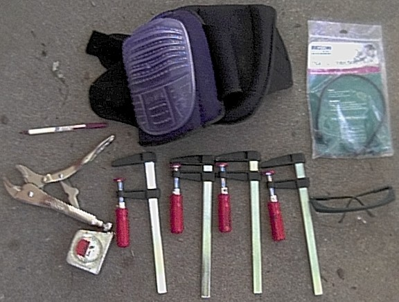
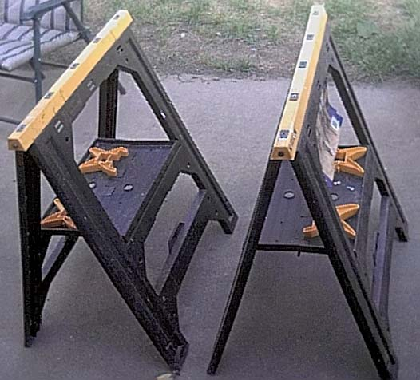
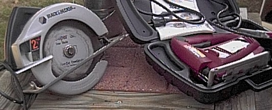
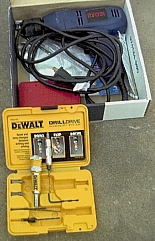

Wood Working Tools
Please note that I am not "advertising" any of the below tools.
I am just telling you what I use. You may be able to find better
equipment / cheaper that does the same thing. Good.
(The prices below are from when I first wrote this page – call it 1.5X to 2X in
today's money. The ratios and the advice still hold.)
You can be very cheap and get a set of
tools for less than $100 but I strongly recommend not doing this.
With the exception of the simplest of projects, using these tools to do any of
the projects would be like digging the basement of your new house with a shovel
and a wheelbarrow:
Dust Mask (to protect your lungs from wood dust) - $5
Screw Driver - $5
Saw - $10
Hammer - $10
Clamps (4 Ea., $7 Each) - $28
Tape Measure - $8
Saw Horses (2 Ea., $13 Each (not the ones pictured below)) - $26
Vise-Grip Locking Grip Pliers - $10
Cheap Hotel Pens - Free :-)
The list of tools I use are as follows, total $245 (But believe me, well worth
the cost):
Knee Pads - $30
Safety Glasses - $5
Ear Protection - $5
DeWALT reversible Screw / Drill Bit "Drill
Drive" - $20
Drill - $30
Dust Mask (to protect your lungs from wood dust) - $5
Screw Driver - $5
Hammer - $10
Clamps - (4 Ea., $7 Each) - $28
Tape Measure - $8
Saw Horses (2 Ea., $13 Each (not the ones pictured below)) - $26
Vise-Grip Locking Grip Pliers - $10
Circular Saw - $50
Jigsaw - $30
Cheap Hotel Pens - Free :-)




I learned the hard way that the safety equipment really is needed,
and of all the cost it is the least expensive. The safety glasses kept
wood chips out of my eyes, the hearing protection helped save my hearing and
the knee pads kept my knees from getting banged up more than they already are.
(One upside of recent years: proper N95 respirators are now cheap and available
everywhere – there is no longer any excuse for breathing sawdust.)
READ all the warnings on the equipment
you buy, they are there for a good reason, not because they made a lawyer rich.
A note on Corded versus Battery tools
You will notice the drill and saws above are corded, and if you go to the big box store today
you will notice something else: the corded section has shrunk to about one sad shelf while the
battery aisle glows like a casino. One store I went into had the section labeled 'corded drills'
yet ALL of the tools in that section were battery. There are honest reasons for that – modern lithium and
brushless motors made cordless tools genuinely good, and if you are a contractor on a ladder all
day, no cord is a real safety and productivity win. But there are less honest reasons too:
1) The batteries are the product, not the tool. Every manufacturer uses a proprietary battery
mount, incompatible with every other brand (and sometimes with their OWN previous generation).
Once you own two of their batteries, congratulations – every future tool you buy will be that
brand, because the alternative is buying into a second $100–a–battery ecosystem. Razor
and blades, with the blades at a hundred bucks each.
2) A corded drill is a terrible business model. It has no consumables and it lasts 30 or 40
years – the manufacturer sells you one, ever. A battery is a wear item with a few hundred
charge cycles and a calendar life whether you use it or not, so a cordless customer comes back to
the register forever. Guess which one the marketing budget promotes.
3) The voltage wars are marketing, not engineering – "20V MAX" is the same nominal 18V
pack with a bigger number printed on it. The periodic voltage–and–connector reshuffles
also conveniently reset your ecosystem investment to zero.
My reason for staying corded is simpler: I am not a daily user. A battery pack sitting on a
shelf slowly discharges and ages whether you use the tool or not, and its favourite trick is being
dead the Saturday you finally need it – at which point a replacement battery costs more than
my entire corded drill did. The corded tool has been on that same shelf for years, and it
delivers 100% power in the time it takes to find the outlet. If you build things every week,
buy cordless and enjoy it – just pick ONE ecosystem deliberately, buy bare tools after the
first kit, and know what you signed up for. If your tools rest more than they work, the cord
is a feature.
Main Page